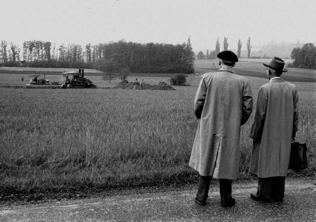
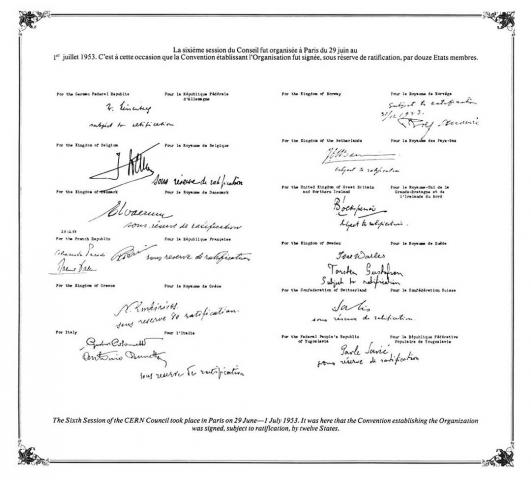

Al final de la Segunda Guerra Mundial, la ciencia europea ya no era de categoría mundial. Siguiendo el ejemplo de las organizaciones internacionales, un puñado de científicos visionarios imaginó la creación de un laboratorio europeo de física atómica. Raoul Dautry, Pierre Auger y Lew Kowarski en Francia, Edoardo Amaldi en Italia y Niels Bohr en Dinamarca fueron algunos de estos pioneros. Este laboratorio no sólo uniría a los científicos europeos, sino que también les permitiría compartir los crecientes costes de las instalaciones de física nuclear.
El físico francés Louis de Broglie presentó la primera propuesta oficial de creación de un laboratorio europeo en la Conferencia Cultural Europea, inaugurada en Lausana el 9 de diciembre de 1949. Un nuevo impulso se produjo en la quinta Conferencia General de la UNESCO, celebrada en Florencia en junio de 1950, en la que el físico estadounidense y premio Nobel Isidor Rabi presentó una resolución que autorizaba a la UNESCO a "ayudar y fomentar la formación de laboratorios regionales de investigación con el fin de aumentar la colaboración científica internacional..."
En una reunión intergubernamental de la UNESCO celebrada en París en diciembre de 1951, se adoptó la primera resolución relativa a la creación de un Consejo Europeo de Investigación Nuclear. Dos meses más tarde, 11 países firmaron un acuerdo por el que se establecía el consejo provisional: así nació el acrónimo CERN.
La primera reunión del Consejo del CERN no tardó en llegar tras la firma del acuerdo. Se celebró en la UNESCO del 5 al 8 de mayo de 1952, bajo la presidencia del suizo Paul Scherrer. En esta reunión se invitó a los gobiernos que deseaban acoger el nuevo laboratorio a presentar propuestas antes de finales de julio y se nombraron los primeros cinco funcionarios.
Edoardo Amaldi fue nombrado Secretario General de la organización provisional, Cornelis Bakker, de Ámsterdam, encabezó el grupo que elaboraría los planes para la primera máquina del laboratorio -un sincrociclotrón con una energía de al menos 500 MeV-, Niels Bohr dirigió el grupo de teoría y Odd Dahl, de Noruega, obtuvo la tarea de explorar las opciones para la máquina "más grande y potente" concebida originalmente y que reuniría a la ciencia y los científicos europeos.
A Lew Kowarski -que originalmente propuso crear un laboratorio de investigación fundamental, desvinculado del objetivo militar, con un acelerador nuclear- se le encargó la organización y creación de un laboratorio internacional, desde los procedimientos financieros hasta los edificios y talleres.
Ginebra fue seleccionada como sede del Laboratorio del CERN en la tercera sesión del consejo provisional en 1952. Esta selección fue aprobada en referéndum en el cantón de Ginebra en junio de 1953 por 16.539 votos a favor y 7332 en contra.
Fue seleccionada entre las propuestas presentadas por los gobiernos danés, holandés, francés y suizo. Pero la ubicación central de Ginebra en Europa, la neutralidad suiza durante la guerra y el hecho de que ya albergara varias organizaciones internacionales le dieron ventaja. Mientras se preparaba el establecimiento del laboratorio en Ginebra, el trabajo teórico se realizaba en Copenhague.
El proyecto de convenio se completó en los 18 meses previstos y fue aprobado por unanimidad por los representantes de los once países que habían firmado el acuerdo original más el Reino Unido, y el documento se puso a disposición para su firma.
El Convenio del CERN estableció las contribuciones financieras, que se calculan en función de la renta nacional neta de los últimos años, de modo que cada Estado miembro paga en función de sus posibilidades.
El 17 de mayo de 1954 se excavó la primera pala de tierra en el emplazamiento de Meyrin, en Suiza, ante la mirada de los funcionarios de Ginebra y del personal del CERN.
En la sexta sesión del Consejo del CERN, que tuvo lugar en París del 29 de junio al 1 de julio de 1953, se firmó el convenio constitutivo de la organización, sujeto a ratificación, por parte de 12 Estados. El convenio fue ratificado gradualmente por los 12 Estados miembros fundadores: Bélgica, Dinamarca, Francia, la República Federal de Alemania, Grecia, Italia, los Países Bajos, Noruega, Suecia, Suiza, el Reino Unido y Yugoslavia. El 29 de septiembre de 1954, tras la ratificación de Francia y Alemania, se creó oficialmente la Organización Europea para la Investigación Nuclear. El CERN provisional se disolvió, pero el acrónimo se mantuvo.
El sincrociclotrón (SC) de 600 MeV, construido en 1957, fue el primer acelerador del CERN. Proporcionó haces para los primeros experimentos del CERN en física de partículas y nuclear. En 1964, esta máquina comenzó a concentrarse únicamente en la física nuclear, dejando la física de partículas para el más reciente y mucho más potente Sincrotrón de Protones (PS).
El SC se convirtió en una máquina notablemente longeva. En 1967, comenzó a suministrar haces a una instalación dedicada a los iones inestables llamada ISOLDE, que lleva a cabo investigaciones que van desde la física nuclear pura hasta la astrofísica y la física médica. En 1990, ISOLDE se trasladó a otro acelerador y el SC cerró tras 33 años de servicio.